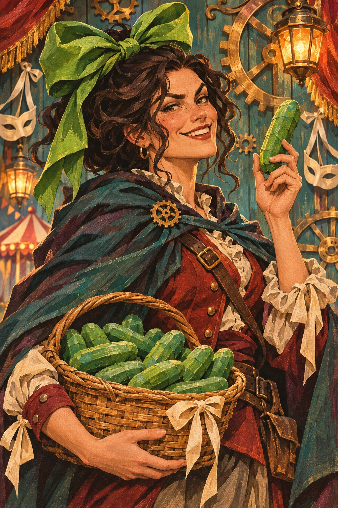
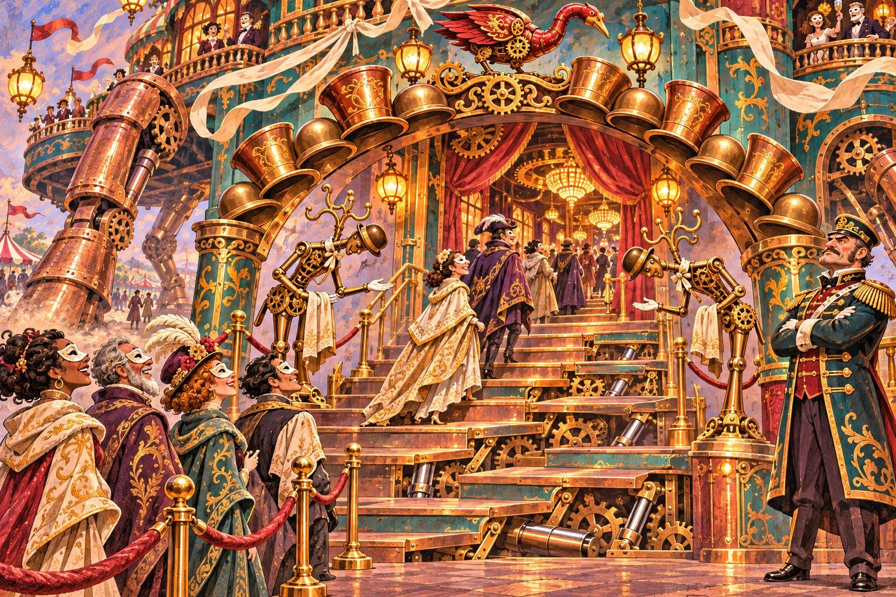
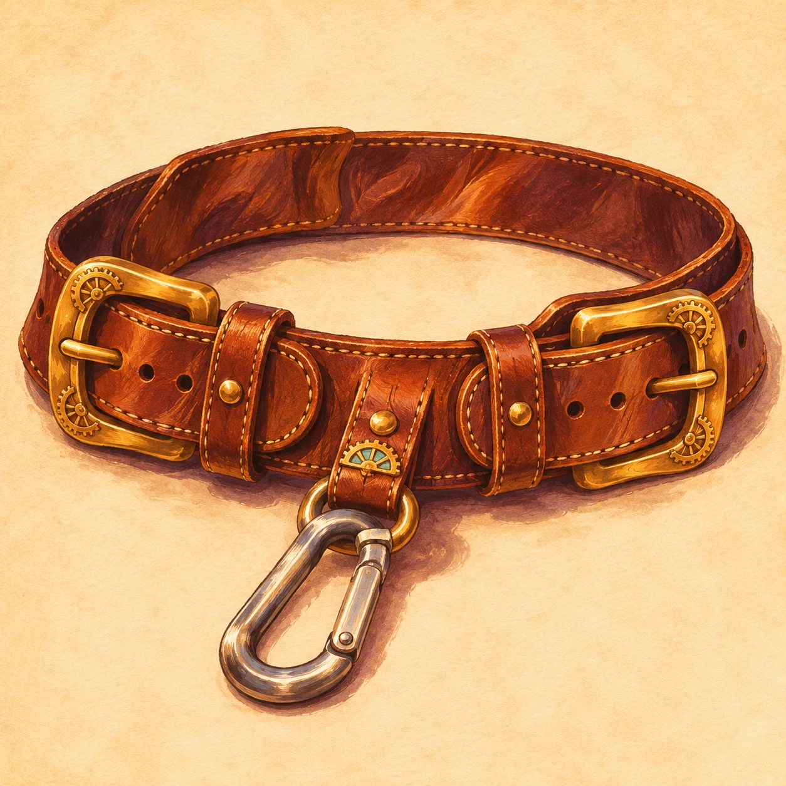
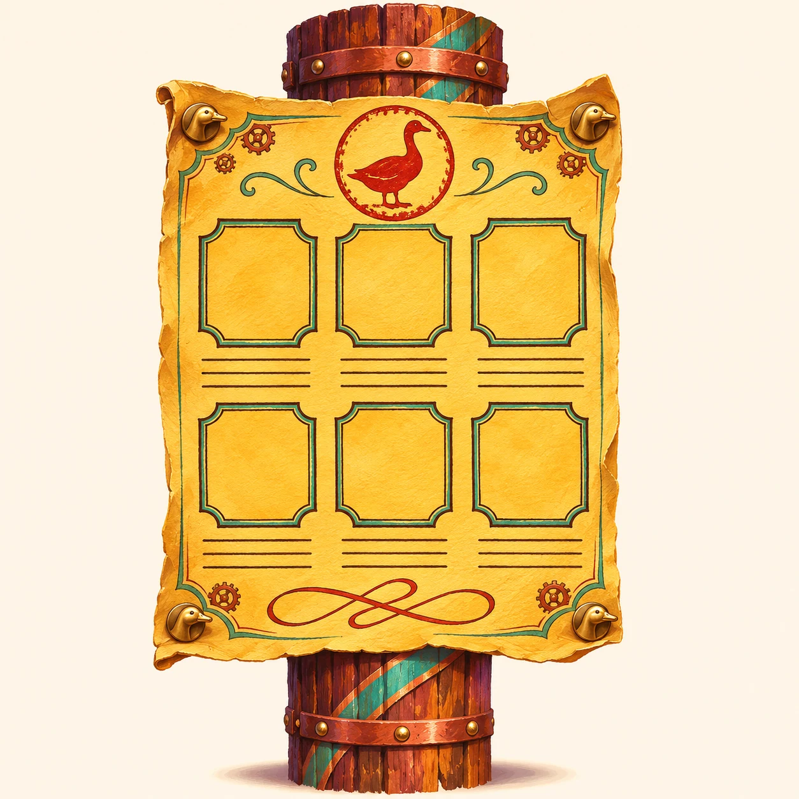
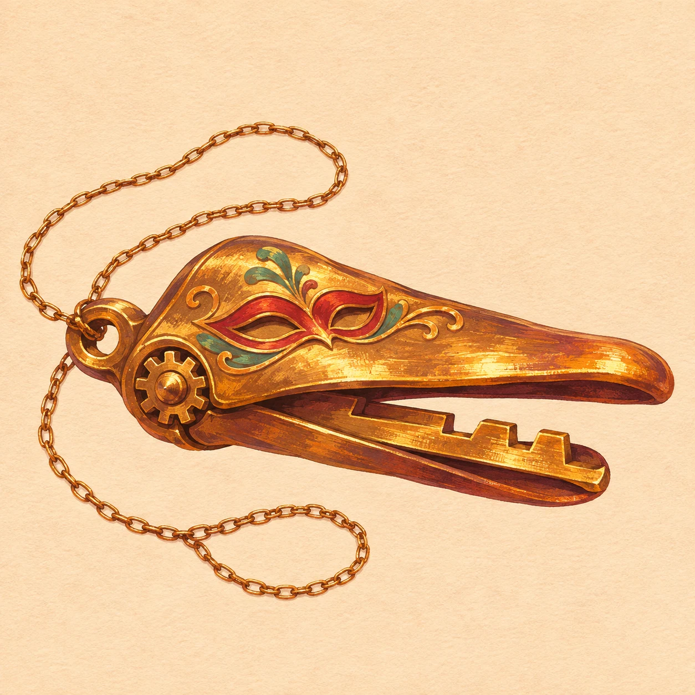
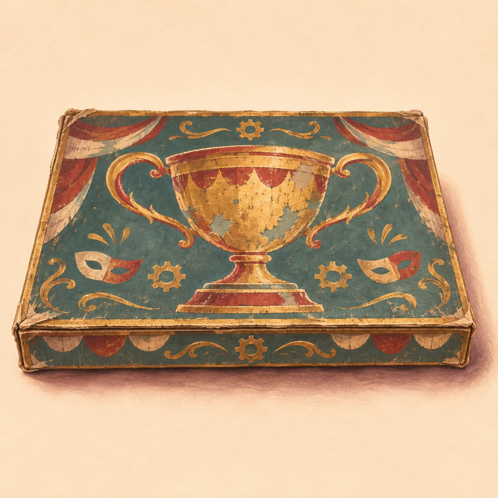

Вечер 1
Казино перешагивает торжок
Добыть служебную программу поклонов из пюпитра Бронка: узнать, когда красный гусь выходит из гнезда и как он идёт на большой поклон.
Открыть сценарий →
Казино «Тысяча реверансов» шагает на восьми медных ногах к Медному Рубежу, за которым обещания призов ничего не стоят. Хозяин присвоил девяносто талеров победителей. У вас фургон, восемь переходов, лист шестерён и друг-победитель Феликс. Каждый вечер — одно дело: короткий план у фургона, потом вылазка за тем, без чего не обойтись в большом ограблении. А на листке розыска растёт цена за ваши головы, и её видят все.
8 сессий по Около трёх часов: план у фургона 20 минут, дело 75 минут, перерыв 15 минут, развязка 65 минут (в первый вечер план 25 и дело 70; в последний план 25, дело 70 и ступня 75).. Подготовленные герои — уровень 3. Прочитайте первую сессию, выберите состав и передайте игрокам отдельную страницу героев.
В мастерской создайте или откройте свой черновик, выберите импорт пакета и укажите package.json либо нужный файл из variants. Проверьте сценарий и состав в предпросмотре; активацию подтверждает ведущий. Сюжетные развилки, часы давления и жанровые действия разрешаются ведущим — они не становятся автоматически сыгранными событиями.
Пакеты разных размеров используют первые N героев в порядке карточек. Дополнительные герои дают новые роли, но не обязательные ключи к истории. Выбор произвольного состава требует правки черновика и повторной проверки.
Комическая афера: план из шестерён, маски, которые чихают конфетти, гусь, который вертится, и друг, который улыбается одинаково до и после. Шутка бьёт по чванству Бляма и нелепым правилам, а не по слабым; поимка — штраф и позор, не боль.
Добыть служебную программу поклонов из пюпитра Бронка: узнать, когда красный гусь выходит из гнезда и как он идёт на большой поклон.
Открыть сценарий →Добыть служебные шестерёнки с гусиным профилем: минимум две, для пары в масках, и лучше три, про запас. Уйти из Салона так, чтобы на листке розыска выросло как можно меньше.
Открыть сценарий →Добыть две маски Бережливости и маски прикрытия.
Открыть сценарий →Добыть клюв-ключ красного гуся или его слепок и договориться с Мартой о выходе на третьем поклоне.
Открыть сценарий →Вернуть Марте вылетные бирки из будки сбора; когда казино свернёт с тракта, найти новый уход.
Открыть сценарий →Добыть вороток лодыжки из масляной ниши в шахте ноги и предварительно выбрать ногу для большого дела.
Открыть сценарий →Забрать репетиционного гуся из кладовой Петли и снять приметы настоящего гуся, чтобы Теша могла перекрасить двойника.
Открыть сценарий →Подменить гуся на прощальном поклоне, разложить яйца по носильщикам и сойти по ноге казино на хартийную землю, пока ступня не встала за Рубежом.
Открыть сценарий →
Золотистый фрак, усы в форме скобок и трость с крошечным аплодирующим кулачком.
Хозяин казино «Тысяча реверансов»; охотно объясняет, что любой праздник становится лучше от его присутствия.
Перейти Медный Рубеж с девяноста призовыми талерами и прослыть безупречно щедрым хозяином; поймать дерзкий экипаж с поличным при гостях.
Присвоил призовой фонд нарочно. После ночи четвёртого перехода купил Феликса Перескока: тот отрезал половину своей ленты победителя, и Блям держит её в хвосте гуся для показа на втором поклоне. С той ночи Блям знает всё, что Феликс слышит у фургона. Он не мешает всему, что ведёт команду к ногам казино: за Рубежом у ступни он возьмёт их с поличным.
Не дерётся сам, не причиняет вреда и не платит на хартийной стороне ни монеты. Не читает мысли: чего Феликс не слышал, того он не знает.
Хвастает тем, что знает, в формулах вроде «в честь дерзких замыслов», но никогда не называет Феликса до самого Рубежа. При угрозе публичной неловкости предлагает конкретную сделку, например откупное; это искушение, а не конец игры.

Сиреневые нарукавники, серьги из счётных костяшек и очень аккуратная чашка чая. На цепочке у неё медный ключ в форме гусиного клюва.
Кассирша; отвечает на вопросы точно, ни словом больше, и пишет цифры на листке розыска.
Чтобы белая жестянка — заработок четырнадцати служащих — доехала до расчёта целой.
Хранит копию первого обещания призов и презирает приписку Бляма. Готова «не видеть» слепок клюв-ключа, если ей поклянутся не трогать белую жестянку.
Сама ключ не отдаёт и не позволит тронуть белую жестянку. При цене на листке 10+ помогает только без свидетелей; при 22+ — лишь тем, кому дала слово и кто его сдержал.
На прямой вопрос — прямой ответ, не больше. После клятвы о жестянке сама прижимает ключ к мылу для слепка и «не видит». Показывает копию обещания тому, кто явно отделяет призовой фонд от заработка персонала.

Зелёный бант, дорожный плащ и корзинка одинаковых огурцов из папье-маше.
Глава весёлой артели «Безупречные огурцы»; никогда не смеётся первой над собственной шуткой.
Долю — одно медное яйцо — и славу лучшей аферистки Тракта.
Блям на третьем переходе звал её «поговорить о долях»; она отказалась и решила, что он будет покупать кого-нибудь ещё. Без договора на втором поклоне её артель сама попытается схватить гуся и провалится громко.
Не трогает гостей и не выдаёт партнёра по честному договору; расплывчатое обещание считает предметом торга. При цене 22+ без договорённости не помогает.
Открыто называет цену первой. Про приглашение Бляма говорит, если спросить, кто ещё к нему ходит. Просит распределить ответственность при провале, а не только прибыль.

Высокий привратник в крошечной фуражке; запасная пуговица на цепочке.
Проверяет приглашения, по утрам заводит латных распорядителей и прибивает листки розыска.
Порядка и достоинства гостей; не участвовать в подлости хозяина.
Служебную программу поклонов держит в пюпитре. Знает трёхсчётный реверанс, который останавливает латников на минуту. В полночь после четвёртого перехода видел, как Феликс прошёл к хозяину через служебную дверь и вышел с той же плоской коробкой.
Не пропускает угрозу гостям и не берёт денег. При цене 10+ помогает только без свидетелей; при 22+ не помогает вовсе, если ему не дали слово и не сдержали.
Чётко сформулированный вопрос получает чёткий ответ. После заботы о госте (вечер 2) сам рассказывает о ночном визите и в финале оставляет открытой служебную дверь к средним и задним ногам.

Пояс с цветными нитками, защитные очки и шляпа с прищепками вместо перьев.
Подбирает гостям маски добродетелей и просит возвращать их без варенья.
Хорошего розыгрыша, в котором её работа и клиенты не станут посмешищем.
Личные маски Бережливости братьев Кадильниковых не отдаст без их согласия, но сошьёт новые по ярлыку. Репетиционного гуся перекрасит под настоящего за одну ночь, если принесут приметы.
Не выдаёт чужую личную маску без хозяина и не поддерживает травлю. При цене 16+ помогает только тайком.
Показывает чих на себе. За помощь с обиженными вешалками даёт учебные маски без проверки и без боя.

Квадратная бородка, складная указка, сюртук цвета старого зеркала.
Экскурсовод Складной галереи; автор шагомера на стене и репетиционного гуся.
Чтобы его работу называли по имени при людях.
Шагомер на стене показывает походку казино на любой дороге. Репетиционный гусь с девятью деревянными яйцами хранится в его кладовой за зеркалами.
Не ломает своё и не рискует сам; не гарантирует исход. При цене 16+ помогает только тайком.
Объясняет и отдаёт всё, если при свидетеле сказать: «Шагомер — работа Петли».

Шарф с рисунком облаков, очки на лбу и всегда сухие рукавицы.
Возит гостей зонтичными корзинами между казино и торжком.
Вернуть вылетные бирки, которые Блям забрал «сбором за посадку».
Тридцать лет латает зонты, лазая по задним ногам казино, и знает их шахты. За возврат бирок готова вывезти экипаж с ношей на третьем поклоне. Ночью после четвёртого перехода к ней заходил Феликс спросить, хватит ли корзин.
Не бросает пассажиров; без ветра не летит. При цене 16+ помогает только тайком.
Показывает бирку. После возврата бирок дарит Полине зонтичную верёвку и рассказывает о ногах.

Синяя лента победителя с вышитым зайцем, прыгающим через забор, на простом пальто; плоская призовая коробка под мышкой.
Один из победителей конкурса находчивости, громкий жалобщик и друг героев; член экипажа фургона.
Получить свои деньги, чтобы никто не решал за него, и не бояться за бабушку.
До ночи после вечера 4 — верный член экипажа. В ту ночь тайно пришёл к Бляму через служебную дверь Ворот и согласился на сделку: строка на листке заморожена, за каждую голову экипажа на казино при переходе Рубежа ему платят общую цену (+2, если у головы флажок лица), за каждое медное яйцо за Рубежом — пять талеров. Он отрезал половину ленты, расписка Бляма лежит в коробке. Мотив — страх и деньги; бабушка с вышивальным лотком на торжке. Тепло к друзьям у него настоящее.
Никого не бьёт и не лжёт про ленту, если её показали ему в лицо. Про головы и расписку молчит.
Показывает афишу и ленту без проверки. При прямом уличении вещью тепло признаёт ленту: «Подписал. Цена на всех росла, а у бабушки лоток на торжке. Больше ничего, друзья. Я с вами до ступни».

Высокая дама в пробковом шлеме с вуалью; на поясе латунные бирки «экземпляр №…», сачок с медным ободом, за спиной сетемёт.
Капитан ловцов по листкам розыска; ловит, сдаёт и не бьёт — так говорят на торжке.
Собрать лучший «сезон» — весь экипаж с листка — и чтобы её ремесло уважали.
Блям обещал ей премию за носильщиков, удержанных на ноге у Рубежа, и сказал, что ногу назовёт в последний день. Кто ему доносит, она не знает и знать не хочет.
Не вредит сверх сачка и сети; не трогает гостей и детей; не берёт людей с хартийной земли во время перехода; за Рубежом не охотится.
Представляется первой. Когда все её ловцы в сетках, опускает сачок и отступает с поклоном. Увидев расписку Бляма, снимает сеть, перестаёт держать сама и идёт ловить Феликса: «Экземпляр, за которого платят дважды».

Мука на носу, лента победителя с вышитой мельницей и корзина пирожков.
Самая младшая победительница конкурса; торгует пирожками с отцовского воза.
Получить свою долю сегодня, пусть и меньшую.
Ушла на конкурс тайком от родителей и боится, что они узнают раньше, чем увидят деньги.
На борт казино не поднимается; на планы приходит, только если зовёт Феликс.
Показывает ленту по первой просьбе и отвечает прямо.

Праздничная дорога между холмами, где передвижные заведения кланяются друг другу на поворотах. Медные следы казино соседствуют со следами сапог и колёс. Короткая дорога к Рубежу идёт через безветренный Медный овраг.

Лавки следуют рядом с медленно идущим казино. Цветные ленты показывают ветер; столы у чайницы подходят для встреч и негромких споров. В конце рядов стоит хартийный столб; здесь же, у чайницы, вывешивают листки розыска. Торжок кочует следом за казино.

Парадный вход казино под аркой из шляп. Латунные вешалки приветствуют гостей, а лестница подстраивается под шаги здания. У арки — пюпитр привратника под латунной крышкой и узкая служебная дверь в Салон.

Круглая гостиная с бархатными столами, бесплатными играми в нелепые доводы и потолком, повторяющим самый торжественный комплимент. У стены — доска заводки, где по утрам висят служебные шестерёнки, и стеклянное гнездо для показа фонда.

Парадные маски сохнут над ваннами блестящей пены. На крючках висят ярлыки «скромность», «отвага» и «непомерная пунктуальность».

Счётная комната с окошком для справок, широким прилавком и вывеской «Сначала вопрос, потом звон». На полках стоят разноцветные футляры; у стены — медное гнездо для красного гуся.

Балкон складывается гармошкой при каждом поклоне казино. На его стенах висят зеркала, которые изображают посетителей с безупречной осанкой, а на стене — большой латунный шагомер.

Открытая площадка на передней палубе казино. Три широкие ступени ведут к поворотному помосту под стеклянным колоколом; с дороги видны флажки и праздничные плакаты.

На задней палубе закреплены корзины под большими полосатыми зонтиками. Воздушные огни обозначают места посадки, а рядом был обычный выход к придорожной лестнице — с вечера 5 её срезали латники Бляма. Здесь же коленные люки задних ног, у которых с вечера 5 сидит пост ловцов.
Восемь медных ног в два ряда. Каждая — полая шахта с лестницей и страховочными сетками: наверху коленный люк, внизу люк лодыжки над ступнёй. Пахнет маслом, колено щёлкает шестернями на каждом шаге.

Длинный вал из позеленевших медных плит поперёк тракта. На валу столб с надписью «Здесь кончается ярмарочное слово». По эту сторону — лагерь торжка, по ту — Вольная пустошь.

Блокнот в клетку с потёртыми углами. На обложке оттиснуто гусиное перо, внутри на каждом листе нарисованы зубчатые колёса с пустыми строками для имён. Одна шестерня на листе всегда нарисована чуть кривее остальных: Борис говорит, что так она «лучше крутится».
Здесь пишут план каждого вечера: шаг — шестерня, у каждой шестерни имя исполнителя. Правило фургона: шестерня без имени не крутится, шага без исполнителя нет. Лист заполняют в сцене плана за двадцать минут по часам колена казино. Лист нельзя оставлять на месте дела: оставленный лист или вырванная страница — след (+1 к общей цене, не больше +2 за вечер), и любой, кто нашёл лист, узнает всё, что на нём написано. Раз за вечер игрок может сказать «мы это предусмотрели» о мелкой подготовке, которую можно было вписать на лист; после чистого вечера таких возможностей две.

Широкий кожаный пояс цвета крепкого чая. На нём две медные пряжки, которые смотрят в разные стороны и, кажется, спорят, кому застёгиваться первой. К поясу приделан карабин с гравировкой «Не отпускать».
На ноге казино Злата пристёгивается карабином к лестнице: в раунд колена её не подбрасывает к колену, и реакцию «держусь» она не тратит. Соседа, который стоит рядом с ней на лестнице, она держит так же, без действия. Вне шахты пояс решает мелкие задачи: удержаться на качнувшейся палубе, не упасть с галереи, пока та складывается. Пояс не даёт новых умений в бою и не заменяет проверок.

Жёлтый лист плотной бумаги с оттиском красного гуся вместо герба. Ровные строки примет и цен выведены чернилами и аккуратными цифрами кассирши, внизу подпись хозяина казино с завитушкой. Углы прибиты медными гвоздиками с шляпками-гусями, чтобы ветер не читал первым.
На листке одна клетка «ОБЩАЯ» — цена любой головы (старт 5 талеров) — и у каждой строки флажок «лицо»: с ним голова стоит общую плюс 2, ставится один раз. Цену ведёт ведущий карандашом при игроках и каждый раз называет причину вслух: шум, бой на глазах гостей, след; флажок — за узнанное лицо. Общая видна игрокам всегда и не падает, кроме откупа Бляма. Полоса общей цены (5–9 «Глазеют», 10–15 «Охота», 16–21 «Облава», 22+ «Вся ярмарка») говорит, кто охотится на экипаж и кто из союзников помогает только тайком. Листок действует, пока казино стоит на хартийной земле. С вечера 5 в строке Феликса чернилами стоит отдельное число, которое не растёт: его видно, если посмотреть.

Лакированный футляр в форме гуся размером с ягнёнка, тёмно-красный, как свежее сургучное яблоко. Клюв заперт, на левом крыле виден скол, на клюве царапина. В хвосте узкая прорезь для лент, как в копилке для записок. Между показами гусь стоит в медном гнезде.
Гусь вмещает девять медных яиц по десять талеров. Между поклонами он сидит в гнезде Медной кассы, и гнездо открывается только от наклона казино, то есть во время поклона. Отпирается клюв клюв-ключом. Пока гусь на показе, чары держат яйца внутри; снимаются они, только пока гуся несут через галерею на прощальном поклоне, и там же из хвостовой прорези можно вытащить отказную ленту. Вынутые яйца нельзя выбросить с палубы: брошенное отпрыгивает обратно, как мяч на резинке, поэтому выносить их надо в руках или в кармане. Приметы (скол на крыле, царапина на клюве) нужны Теше, чтобы перекрасить репетиционного гуся под настоящего. На первом поклоне гусь стоит под стеклом в Салоне, на втором вертится на помосте перед всем залом, и в его хвостовой прорези видно, что что-то трепещет, — это сцена вечера 7, а не проверка. На третьем поклоне его несут по Складной галерее на помост.

Девять тяжёлых медных яиц величиной с кулак, тёплых на ощупь и чуть поющих, если стукнуть ногтем. Внутри что-то негромко звенит, как мелочь в копилке. На каждом яйце выбит маленький гусиный профиль.
Это добыча: в каждом яйце десять талеров, всего девяносто. Человек несёт в карманах до трёх яиц и при этом лезет и двигается как обычно. Если яиц больше, их кладут в мешок, а с мешком на лестнице заняты обе руки: носильщик только двигается, не атакует и не колдует. Яйцо считается «сошедшим», когда оказалось на хартийной земле в кармане или мешке человека, сошедшего со ступни на хартийной стороне. Раскладка по носильщикам записывается на листе шестерён накануне большого дела: «кто несёт сколько». Деревянные яйца репетиционного гуся звенят иначе, но на взгляд и вес близки.

Латунные шестерёнки с выбитым гусиным профилем, каждая на шнурке, как нательный крестик у очень аккуратного человека. По утрам они висят на доске заводки у стены Салона, а потом переезжают на груди латных распорядителей.
Носитель шестерёнки выглядит для латных распорядителей служащим заведения: они не останавливают его и вежливо кланяются. Шестерёнки открывают служебные двери и коленные люки ног. Для подмены гуся на третьем поклоне нужны две шестерёнки: по одной на каждого из пары в масках Бережливости. Снять шестерёнку с груди заведённого латника значит начать стычку. Шестерёнки можно отдать Агриппине как выкуп сезона, но тогда их не будет на ноге. Если шестерёнок меньше двух, один из пары обходится служебной дверью Бронка или Харизмой.

Две серые маски Бережливости с поджатыми губами и привычкой морщиться, когда рядом что-то дарят. Рядом на крючках несколько розовых масок Почтительности с вечным лёгким поклоном. Ярлыки с добродетелями пришиты к ленточкам; Теша просит возвращать маски без варенья.
Маска даёт прикрытие: носителя принимают за гостя или служащего с этой добродетелью, лицо не меняется. Чтобы не выдать себя, носитель должен вести себя соответственно: Бережливость не угощает, не угощается и не говорит «угощаю» или «дарю». Если носитель противоречит добродетели, маска чихает конфетти, и это узнанное лицо: герою ставят флажок «лицо» (+2 к цене его головы, один раз). Настоящие маски Бережливости личные, и без согласия владельцев Теша их не выдаёт; новые она шьёт по ярлыку. Маска не даёт магии и не заменяет проверок Харизмы.

Медный ключ в форме гусиного клюва, с зубцами вместо языка. Висит на цепочке на шее у кассирши, а когда та считает, постукивает по пуговицам нарукавников в такт счёту.
Отпирает клюв красного гуся. Взять ключ можно тремя способами. Украсть: Ловкость (Ловкость рук) СЛ 14; к ночи пропажу находят, общая цена на листке +2, а Биби перестаёт помогать на людях. Снять слепок в мыле: Ловкость (Ловкость рук) СЛ 12 при отвлечении, копию отливают за ночь, цена не растёт. Или по-честному: Биби сама прижимает ключ к мылу и «не видит», если ей поклялись не трогать белую жестянку. Без слепка и без ключа клюв не открыть, а ключ на ногу не нужен: открывать гуся будет Блям на помосте, поэтому копия важна для подмены и для подтверждения плана.

Медная рукоять с квадратным гнездом на конце, вся в тёмном масле. Лежит в нише посередине шахты ноги, где стены блестят, как смазанная сковорода. На рукояти выбито: «Ступня встала — крути».
Открывает люк лодыжки изнутри, когда ступня стоит: вставить и повернуть входит в ход носильщика. Перед прощальным поклоном воротки всех ног по распорядку хозяина сдают в Медную кассу; тот, что экипаж вынес на вечере 6, — единственный снаружи. Без него люк открывается, только если двое героев в ряду люка тратят на это действие, и эти двое в эту ступню не сходят. В раунд размаха люк закрыт. Вынести вороток из шахты: взять его действием и вернуться через коленный люк.

Бледно-красный двойник гуся, как будто красный гусь постирали с белыми рубашками. В нём девять деревянных яиц, выкрашенных под медь, на ощупь лёгких. У гуся нет ни скола на крыле, ни царапины на клюве. Хранится в кладовой за зеркалами галереи.
Подмена на третьем поклоне: пара в масках Бережливости вносит на помост копию вместо настоящего гуся. Чтобы копия прошла первый взгляд Бляма, Теша перекрашивает её по трём приметам настоящего: скол на левом крыле (виден уже на первом поклоне, вечер 3), царапина на клюве и синий обрывок ленты в хвостовой прорези (вечер 7). Не хватает хоть одной — Блям замечает подмену до отпирания клюва. Деревянные яйца можно давать Феликсу вместо настоящих: он не взвешивает яйца в руке. Кладовую открывает Пафнутий, если при свидетеле назвать его создателем, иначе мимо латника.

Синяя лента победителя на простом пальто Феликса. На ней вышитый заяц, прыгающий через забор, и буквы «Ф.П.». Вышила её бабушка Феликса, и стежки слегка разные по длине, что ей совершенно не мешает гордиться работой.
Знак победителя Феликса: все видели её на плане вечера 1, и по ней узнают заяц на любой другой вещи. Феликс охотно показывает ленту по просьбе. С вечера 5 она заметно короче: срез свежий, конец подвёрнут под лацкан, заяц виден только до забора. Это видно любому, кто посмотрит на пальто или попросит показать ленту. Феликс объясняет всё тепло и без запинки; проверить объяснение можно у Груши, чья лента целая. На вечере 7 в зале мелькнёт синий обрывок, похожий на эту ленту: сравнить их может тот, кто её запомнил.

Картонная коробка с золотой каёмкой, плоская и жёсткая, размером с поднос. На крышке нарисован кубок, который с годами протёрся до бесцветного пятна. Феликс носит её под мышкой, как другие носят шляпу.
Феликс открывает её при каждой шутке о призе, пока в ней ничего нет. С вечера 5 он повторяет ту же шутку, но коробку не открывает: это видно любому. Открыть её без спроса: Ловкость (Ловкость рук) СЛ 13 или дождаться, когда Феликс оставит её у фургона; внутри расписка Бляма (раздатка blam-receipt). Коробка плотная и жёсткая, ею можно подпереть крышку или люк. Феликс уносит её с собой на финальную ногу.


Условия: Хотя бы одно настоящее медное яйцо сошло на хартийную землю (в кармане или мешке человека, сошедшего со ступни на хартийной стороне), а Феликс уехал на казино за Рубеж. Порядок проверки исходов: сначала «Ступня за Рубежом», потом «Перескок на нашей земле», иначе этот.
Сошедшие яйца — приз победителей по хартии. Феликс от своей доли отказался лентой, поэтому деньги делят пятеро победителей (Миро, Полина, Груша, Агафья, дед Ефим), а обещанное союзникам, например яйцо Серафиме, отдаётся из этой же суммы. Ведущий называет сумму одной фразой. С колена уходящей за Рубеж ноги Феликс машет экипажу так же тепло, как всегда; через щель между медными плитами видно, как Блям отсчитывает монеты в его плоскую призовую коробку — впервые не пустую.
Цена: На листе шестерён у Бориса осталась шестерня без имени: её больше некому взять. Герои, оставшиеся на ноге, оказались по ту сторону Рубежа: оштрафованы, без реквизита, вписаны на доску неблагодарных гостей и день идут обратно в обход вала.
Условия: Хотя бы одно настоящее яйцо сошло, и Феликс оказался на хартийной земле, когда последняя ступня его ноги встала за Рубежом (его стащили со ступни, он сошёл сам или экипаж держал его вне ноги под присмотром).
Сделка Бляма пуста: Блям платит только за Рубежом. Если отказная лента осталась в хвосте гуся, доли у Феликса нет, и деньги делят пятеро победителей, как в первом исходе; если экипаж вытащил её в галерее, отказа нет, и Феликс в доле шестым. Феликс сидит на медном валу с коробкой и говорит то же, что всегда: «Друзья, я понимаю». Никакого суда: экипаж просто едет домой, а на листе Бориса одна шестерня так и стоит без имени.
Цена: Тот же разбитый экипаж, только предатель ближе. Сошедших яиц меньше полного фонда, если Феликс успел унести или передать хоть одно. Пойманные — как в первом исходе: штраф, позор, день пути в обход.
Условия: Ни одно настоящее яйцо не сошло на хартийную землю.
Казино переступает Рубеж со всем фондом. Пойманных штрафуют, отбирают реквизит, вписывают на позорную доску и утром выставляют на Вольной пустоши — день пути назад в обход вала. Сошедшие стоят у столба хартии с пустыми карманами. Победители не получают ничего; Феликс за Рубежом получает свои деньги за головы.
Цена: Обещания союзникам не исполнены, а за победителей больше некому требовать. Ранние хорошие решения смягчают позор и сохраняют друзей, но не создают деньги задним числом.
Авторская подготовка и техническая проверка не заменяют живую игру. Длительность, сложность и эмоциональное восприятие пока не проверены группой. Иллюстрации (45) созданы генерацией изображений OpenAI в одном стиле; тактические схемы построены из данных встреч. Полный каталог содержит материалы ведущего — публиковать его целиком для игроков нельзя.